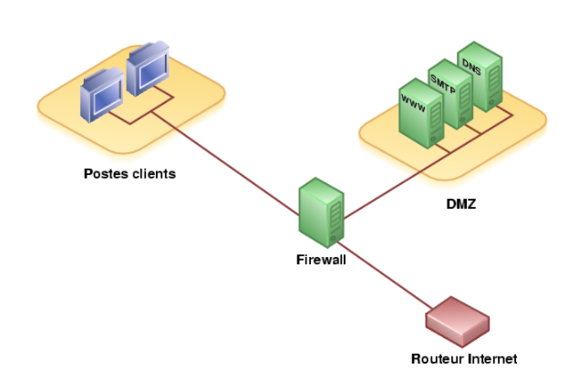
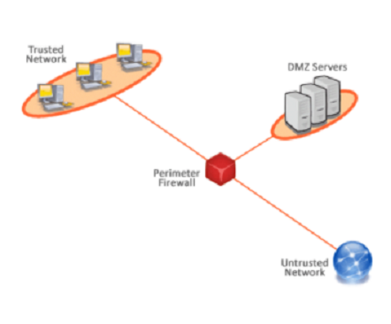
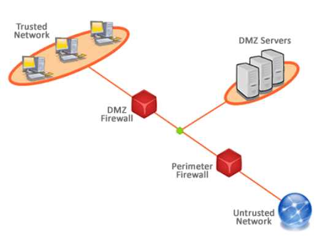

Arquitectura DMZ
Seguridad
En la seguridad de sistemas informáticos y redes la arquitectura más segura y utilizada es aquélla en la que se hace uso de una red perimétrica o zona desmilitarizada (DMZ, DeMilitarized Zone), que se añade un nivel de seguridad situando la subred DMZ entre las redes externa e interna. Una zona desmilitarizada hace referencia a una red de ordenadores con un rango de direcciones IP privadas que sirve como franja de seguridad entre dos redes, separándolas mediante estrictas reglas de acceso. Así, aunque físicamente los servidores dentro de una DMZ se encuentran en la misma empresa, no están conectados directamente con los equipos de la red local.
SU FUNCION
El objetivo de una DMZ es que las conexiones desde la red interna y la externa a la DMZ estén permitidas, mientras que en general las conexiones desde la DMZ sólo se permitan a la red externa, es decir, los equipos en la DMZ no pueden conectar con la red interna. Esto permite que los equipos de la DMZ puedan dar servicios a la red externa a la vez que protegen la red interna en el caso de que intrusos comprometan la seguridad de los equipos situados en la zona desmilitarizada. La DMZ se usa habitualmente para ubicar servidores que es necesario que sean accedidos desde fuera, como servidores de correo electrónico, Web y DNS. Y es precisamente estos servicios alojados en estos servidores los únicos que pueden establecer tráfico de datos entre el DMZ y la red interna, por ejemplo, una conexión de datos entre el servidor web y una base de datos protegida situada en la red interna.
ARQUITECTURA DÉBIL
Una subred protegida débil es aquella que establece la protección de la red interna empleando una zona DMZ por detrás de un firewall de perímetro. En esta disposición, el equipo que actúa como firewall debe tener al menos tres interfaces para poder conectar con la DMZ, el exterior y la red interna. Un inconveniente bastante importante es que un fallo en el cortafuegos puede desproteger a la red interna.
ARQUITECTURA DÉBIL
La subred protegida fuerte establece la protección de la red interna con una zona DMZ situada entre dos firewall. En esta disposición el cortafuegos externo (de acceso) bloquea y controla el tráfico no deseado desde la red externa a la DMZ. El cortafuegos interno (de contención) bloquea y controla el tráfico no deseado de la DMZ a la red interna.
El punto a favor de esta arquitectura es que un fallo en el cortafuegos externo desprotege solamente la DMZ.
Una de las medidas recomendables es tener dos proveedores diferentes para cada uno de los dos servidores que funcionan como firewall. Cada proveedor puede tener una política de seguridad diferente por lo que si un intruso es capaz de saltar las medidas de seguridad de uno de ellos, en el mejor de los casos, tendrá que emplear un método diferente para atravesar el otro.
